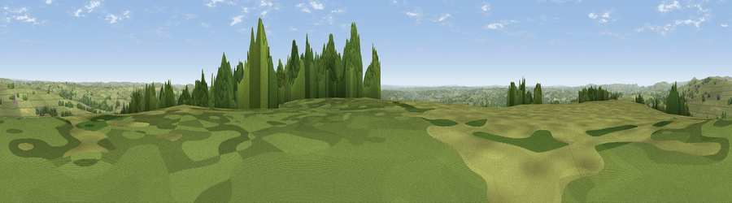

Ipstones Edge
#12788 in England · top 13% of its area beats it · near FoxtThe view, rendered

A 360° render of this exact spot computed from the terrain model, tree cover and land cover — summer colours, afternoon light, calibrated against photographs of famous viewpoints. Real trees, hedges and buildings will differ in detail.
The panorama
Grey silhouette: terrain skyline in each direction (720 bearings, Earth curvature and refraction included). Dashed green: skyline with trees (+15 m) and buildings (+8 m) as obstacles. Blue strip: how far the ground is visible on each bearing.
Where the view opens
Wedge length = distance to the farthest visible ground on that bearing (vegetation-aware). Rings at 10, 25 and 50 km.
What fills the view
75% grassland · 20% woodland · 3% cropland · 2% built-up
Angular shares of the visible panorama (visual magnitude), not map area. Landscape diversity 0.32 (0–1 Shannon).
Key numbers
More beautiful places nearby
The staircase of upgrades: each row has a higher view potential than everything closer. Driving times are estimates from straight-line distance, calibrated against real road routing — check an actual route before setting out.
| Place | Direction | Drive | Score |
|---|---|---|---|
| Viewpoint near Onecote | N · 4 km | ~9 min | 61.9 |
| Viewpoint near Bradnop | NNW · 5 km | ~12 min | 65.2 |
| Viewpoint near Cauldon Lowe | SE · 5 km | ~12 min | 71.9 |
| Viewpoint near Wootton | SE · 6 km | ~13 min | 74.8 |
| Tissington Hill | ENE · 11 km | ~21 min | 75.5 |
| Viewpoint near Mow Cop | WNW · 20 km | ~34 min | 78.9 |
| Viewpoint near Mow Cop | WNW · 20 km | ~34 min | 80.2 |
| Viewpoint near Harthill | W · 53 km | ~75 min | 80.5 |
53.05152, -1.93395 · source: osm peak · position refined by local search. Computed location — check access rights before visiting.